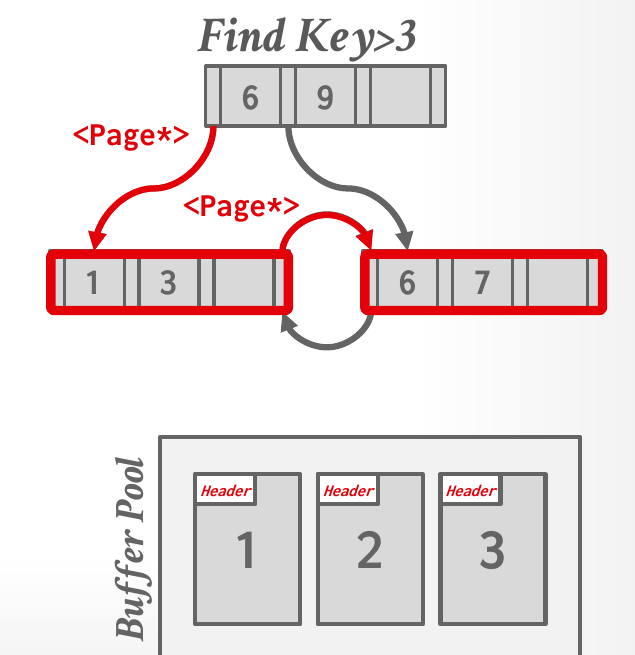
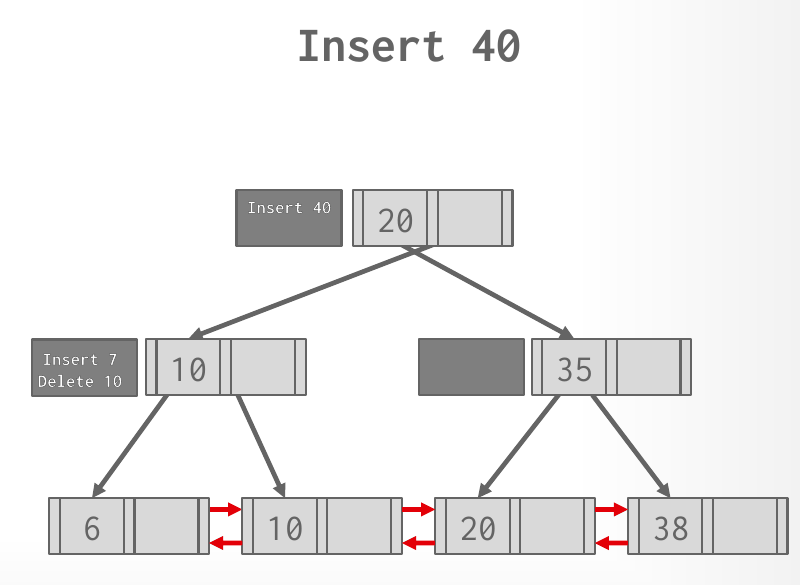

Database Internals in Go · Unit 3 · Lesson 5
B+Tree Design Choices
Choose a B+tree's node size, merge threshold, key layout and in-node search, and explain how pointer swizzling, buffered updates, partial and covering indexes, key compression and bulk loading make it faster, including HW3's Q3(d)iii.
The last two lessons gave the B+tree's algorithms. A real implementation still has decisions to make that the algorithms leave open: how big a node is, when to merge, how to store keys of different lengths, how to search inside a node. Lecture #08 ends with these design choices, taken from Goetz Graefe's book Modern B-Tree Techniques, and with a list of optimizations. Several of them reach Project 2 directly: its page size, the binary search its writeup asks for, and the leaf tombstones that delay deletes.
Lesson 1: a hash table has to store several values for the same key. Which approach does Lecture #07 say most systems use?
Unit 2, Lesson 1: page 12 sits in frame 5 with a pin count of 2. What does the pin count guarantee?
Unit 1, Lesson 5: with an order-preserving dictionary, WHERE name LIKE 'And%' can run on the codes instead of the strings. Why?
Node size
Slide 50 states the rule: the slower the storage device, the larger the best node size. It gives about 1 MB for a hard disk, about 10 KB for an SSD and about 512 B for an in-memory B+tree. The notes explain the two ends. On a hard disk, a large node amortizes the expensive seek over a large chunk of data. In memory, a node of 512 B fits in the CPU cache.
The workload matters too. A point query wants small nodes, so that each step loads little data it doesn't need. A long scan along the leaves wants large nodes, so that it fetches fewer of them. The slide puts the trade-off as leaf node scans versus root-to-leaf traversals.
In BusTub a node is a page, so its size is fixed at 8 KB. Project 2's tests shrink nodes another way, by setting leaf_max_size and internal_max_size to small values. Lecture #10's Project 2 hints suggest the same for your own testing: start with a small page size, such as 512 B, so that splits and merges happen often enough to see.
Merge threshold
The algorithm in the last lesson merges a node as soon as it falls below half full. Slide 51 says some DBMSs don't, and gives the average occupancy of B+tree nodes as 69%. Delaying a merge can reduce the amount of reorganization. The notes give two reasons. Eager merging can cause thrashing, where a run of deletes and inserts around the threshold keeps splitting and merging the same nodes. And delayed merges can be batched, which shortens the time the expensive write latches on the tree are held. Lessons 7 and 8 cover those latches.
A DBMS can go further and leave under-filled nodes in place, then rebuild the whole tree from time to time. The slide notes that this is why PostgreSQL calls its B+tree a "non-balanced" B+tree, nbtree. Project 2's leaf tombstones from the last lesson are in the same spirit: the Lecture #10 announcement describes them as "tombstones of deleted keys to delay merges".
Variable-length keys
So far every key had the same size. Strings don't, and slide 52 lists four ways to store them:
- Pointers: store a pointer to the tuple's attribute in place of the key. The slide calls such trees T-Trees, used by in-memory DBMSs. Every comparison has to chase a pointer, and the notes say the only production use is in embedded devices, where the space saving pays off.
- Variable-length nodes: let each node's size vary. This requires careful memory management, and the notes say it is largely unused.
- Padding: pad every key to the maximum length of its type. In most cases that wastes a lot of memory.
- A key map, or indirection: embed an array of pointers inside the node that map to the key and value list, which is stored elsewhere in the same node. The notes call this the method nearly everyone uses.
The key map is the slotted page from Unit 1, Lesson 2 again: a small fixed-size array at the front of the page, sorted by key, with offsets into variable-length data that grows from the back. The notes add that some systems, PostgreSQL among them, let a node's data overflow into separate pages.
Project 2 doesn't face this choice. BusTub's index keys are GenericKey<KeySize>, a byte array of fixed size, and each page stores its keys in a fixed-size key_array_.
Searching inside a node
Once a search reaches a node, it still has to find the right key or child pointer inside it. Slide 53 gives three approaches:
- Linear: scan the keys from beginning to end. The keys don't even have to be sorted, which makes inserts and deletes cheap, but each search costs O(n). The scan can be vectorized with SIMD instructions that compare several keys at once.
- Binary: keep the keys sorted, jump to the middle, and go left or right depending on the comparison. Searches cost O(log n); inserts cost more, because they must keep the node sorted.
- Interpolation: estimate where the key is from what the node knows about its keys, such as the minimum, the maximum and their distribution. The slide searches for 8 among the seven keys 4 to 10 and computes the offset as (8 − 4) × 7 / (10 − 4), which is 4.67, truncated to slot 4. Slot 4 holds 8. The notes call this the fastest method, but say it is only seen in academic databases, because it works only for keys with special properties, such as integers.
The Project 2 writeup makes this choice for you: "Use binary search to find the place to insert a value when iterating an internal or leaf node. Otherwise, your implementation will probably timeout on Gradescope." Go's standard library has the binary search already. sort.Search(n, f) returns the smallest index i in [0, n) for which f(i) is true, assuming f is false and then true, so with f asking whether key i is at least the search key, it returns where that key is or would be inserted. slices.BinarySearchFunc does the same on a slice and also reports whether it found an exact match. BusTub compares keys with a comparator object rather than with <, so expect to pass a comparison function either way.
#08 B+Trees, "B+ tree optimizations" (1:07:57), slides 49–63: the design choices of this lesson and the optimizations below. The chapter runs to the end of the lecture, about 17 minutes, so some slides go by quickly.
Pointer swizzling
Nodes refer to each other by page ID. Every step of a search therefore asks the buffer pool's page table where the child page is, which costs a lookup and a latch. Slide 55 points out that a page pinned in the buffer pool can't move, so for such pages the DBMS can store a raw memory pointer in place of the page ID. This is pointer swizzling. The notes describe doing it lazily: during a normal traversal, store the pointer that a page lookup returned. They also give the catch. The DBMS must track which pointers are swizzled, and turn them back into page IDs when the page they point to is unpinned and evicted. Otherwise a pointer would lead into a frame that now holds a different page.

Project 2 doesn't swizzle. Every step of a search goes through the buffer pool by page ID and gets a page guard back, and a guard is also what holds the pin that would make a raw pointer safe.
Write-optimized B+trees
Splits and merges are the expensive part of modifying a B+tree, and slide 56 notes that the worker whose insert or delete causes one has to do the work itself. In the worst case that means reorganizing the whole tree. A write-optimized B+tree delays the work: instead of applying an insert or delete at once, it records the change in a log buffer, the mod log, attached to an inner node. When a buffer fills, its changes cascade down to the buffers of the nodes below, a batch at a time, and only reach the leaves later. The slide names these trees fractal trees or Bε-trees (B-epsilon trees).

The cost falls on reads. In the build before the figure, Find 10 has to check the root's mod log on its way down; the log holds Delete 10, which overrides the 10 that is still in the leaf. A search must check every mod log on its path. Project 2's tombstone buffer from the last lesson is the writeup's "simplified version of the Bε-tree": a delete is recorded in the leaf and applied later.
Partial indexes and include columns
A partial index covers only the rows that satisfy a predicate in its definition. It is smaller and cheaper to maintain than a full index. The slide's example:
CREATE INDEX idx_foo ON foo (a, b) WHERE c = 'WuTang';
SELECT b FROM foo WHERE a = 123 AND c = 'WuTang';The query's c = 'WuTang' matches the index's predicate, so the index holds every row the query can return. Slide 58 gives a common use: partitioning indexes by date, with one index per month or year.
Include columns add attributes to an index's leaves without adding them to the search key:
CREATE INDEX idx_foo ON foo (a, b) INCLUDE (c);
SELECT b FROM foo WHERE a = 123 AND c = 'WuTang';The index is searched on (a, b), but every leaf entry also carries c. The query needs a, b and c, and all three are in the index, so the DBMS never has to fetch the tuple. Slide 59 calls this a covering index, and the scan an index-only scan. Compare the last lesson's non-clustered scans, where each matching entry meant a visit to a table page.
#09 Indexes & Filters II, "Advanced index features" (1:14:56), slides 34–35: Lecture #09 comes back to partial indexes and include columns at the end of the class.
Key compression
Three optimizations shrink the keys a node stores, so that more of them fit in a page and the fanout grows:
- Prefix compression (slide 60). Sorted keys in the same leaf are likely to share a prefix. Store the prefix once and only the rest of each key: robbed, robbing and robot become the prefix "rob" with bed, bing and ot.
- Deduplication (slide 61). A non-unique index can store the same key many times in a leaf. Store the key once, followed by a posting list of the tuples that have it: K1 V1 K1 V2 K1 V3 K2 V4 becomes K1 V1 V2 V3, K2 V4. The slide compares it to the hash-table approach that keeps a list of values per key, the alternative to redundant keys in the first warm-up question.
- Suffix truncation (slide 62). Inner-node keys only "direct traffic", so they don't need to be whole keys. Store the shortest prefix that still routes every search correctly: the separators abcdefghijk and lmnopqrstuv become abc and lmn.
Bulk insert
Building an index over an existing table by inserting its keys one at a time splits nodes over and over. Slide 63 gives the faster way: sort the keys first, then build the tree bottom up. Pack the sorted keys into leaves, link the leaves with sibling pointers, and build each inner level from the first key of each node below it. The slide's keys 3, 7, 9, 13, 6, 1 sort to 1, 3, 6, 7, 9, 13, which fill the leaves [1, 3], [6, 7] and [9, 13] under one inner node [6, 9]. The notes add a choice: pack the leaves completely to save space, or leave room in each one so that later inserts don't split them at once.
One buffer pool for inner nodes, another for leaves
HW3 combines this lecture with Unit 2. A DBMS runs mostly OLTP queries, which follow a root-to-leaf path to a few tuples, and sometimes an OLAP-style query that scans many leaves. Unit 2, Lesson 2 showed what a long scan does to a shared buffer pool: sequential flooding, pages read once that push out pages other queries still need. Here the pages at risk are the inner nodes that every OLTP lookup passes through. The same lesson's priority hints already gave an index's root high priority and its leaves low priority.
A separate buffer pool for inner-node pages goes one step further: a leaf scan can then only evict other leaf and table pages. Two facts make the split easy to run. The DBMS knows which kind of node a page holds; in BusTub the page header records the page type. And a page never changes kind: a split or merge creates or removes nodes of the same kind, and the tree grows a new root rather than turning a leaf into an inner node. Unit 2's last lesson met multiple buffer pools as a way to reduce latch contention, and Lecture #04's slide 39 lists a per-page-type buffer pool among the ways to split one.
Work it out
-
What to think about
Bulk loading works bottom up, from the sorted keys. Which key of each leaf does the inner level need?
The method
Sort the keys, cut them into leaves of 2 from the left, and link the leaves. The inner node gets the first key of every leaf except the leftmost, whose range is covered by the leftmost pointer.
The result
Sorted: 1, 4, 8, 12, 17, 20, 25, 30. The tree is
[8,17,25] / [1,4] [8,12] [17,20] [25,30], and the build caused no splits at all: every node was created full, in order. -
What to think about
Deduplication works on whole keys that repeat. Prefix compression works on the distinct keys that remain. Which characters do those keys share at the start?
The method
First write each distinct key once with its posting list of record IDs. Then find the longest common prefix of the distinct keys and store it once for the leaf.
The result
After deduplication: Pittsburgh → [r1, r2, r3], Pittsfield → [r4]. After prefix compression: the prefix "Pitts", then burgh → [r1, r2, r3] and field → [r4]. The leaf stores "Pitts" once in place of four full copies of a 10-character city.
The homework behind these questions
The questions marked HW3 come from CMU's Homework #3: Question 3, with the original figures. Work each one out on paper first, then click the option you got. The quiz tells you at once whether it matches CMU's official answer, and explains why. To compare your working step by step, open the official solutions for Question 3.
Check your understanding
HW3 Q3(d)iii: a DBMS mostly executes OLTP queries but periodically runs OLAP-style queries, such as analytics, over the same B+tree index. Would it benefit from using one buffer pool for inner-node pages and a different one for leaf and table pages?
Why might a DBMS not merge B+tree nodes as soon as they fall below half full?
A node holds the 8 sorted keys 10, 20, 30, …, 80 in slots 0 to 7. Using interpolation search as on slide 53, offset = (target − min) × n / (max − min), truncated, which slot does the search for 50 check first?
What is pointer swizzling in a B+tree, and what must the DBMS remember to do?
With CREATE INDEX idx_foo ON foo (a, b) INCLUDE (c);, why can SELECT b FROM foo WHERE a = 123 AND c = 'WuTang'; avoid reading the table?
Primary sources: CMU 15-445/645 Fall 2025 Lecture #08 slides 49–64 and notes (sections 3 and 4); Lecture #09 slides 34–35 and notes section 7; Lecture #10 slides 42 and 44 (the Project 2 announcement); Homework #3 Question 3(d)iii and its official solution; the Project #2 writeup (Requirements and Hints, Leaderboard Task); BusTub src/include/storage/index/generic_key.h and src/include/storage/page/b_plus_tree_page.h at commit d49b823; the Go documentation for sort.Search and slices.BinarySearchFunc.